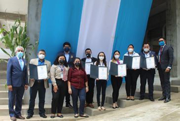
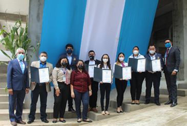

Ubicacion
3 Avenida a
Zona 1, Barberena, 06002
(+502) 7822 7801
info@insarycristovive.edu.gt
horarios
Lunes a Viernes
7:00 AM A 4:00 PM
Sabado a Domingo
1:00 PM A 5:00 PM
El docente influye en el aprendizaje de los alumnos de diversas formas. Su motivación, entusiasmo y pasión por enseñar pueden inspirar a los estudiantes a comprometerse con el contenido y participar activamente en el proceso educativo. Un docente organizado y claro en su comunicación facilita la comprensión del contenido.
El gremio de docentes en nuestro colegio es una comunidad unida por una pasión compartida: la enseñanza y el desarrollo de sus alumnos. Este grupo de educadores se caracteriza por su compromiso incansable, su dedicación y su entrega a la misión de formar generaciones futuras. Son personas inspiradoras que despiertan la curiosidad y el amor por el aprendizaje en sus estudiantes. Su conocimiento, experiencia y habilidades pedagógicas los convierten en líderes en el campo educativo.
 

Estos educadores se guían por principios éticos y un profundo sentido de responsabilidad hacia sus alumnos y la sociedad.
La honestidad y la integridad son pilares fundamentales para este grupo de profesionales, quienes transmiten valores morales y ciudadanos a sus alumnos. Son líderes ejemplares que inspiran con su dedicación y esfuerzo. Su compromiso con el aprendizaje continuo y la búsqueda constante de metodologías innovadoras reflejan su deseo de mejorar y brindar la mejor educación posible.
El gremio de profesores altamente calificados en Insar Cristo Vive es un conjunto excepcional de educadores que sobresalen en su campo. Estos docentes poseen una amplia experiencia y una sólida formación académica que les permite impartir enseñanzas de calidad y con un enfoque innovador.
LLa excelencia en su práctica docente se refleja en el cuidado y la atención personalizada que brindan a cada estudiante. Se preocupan por el bienestar y el progreso individual de sus alumnos, adaptando su enfoque para satisfacer sus necesidades específicas.
La seguridad de nuestros alumnos es una prioridad absoluta en nuestro colegio. Nos preocupa profundamente el bienestar y la protección de cada estudiante que forma parte de nuestra comunidad educativa. Estamos comprometidos a crear un ambiente seguro y acogedor donde los niños y jóvenes puedan desarrollarse plenamente, sin preocupaciones ni temores.
Para lograr este objetivo, hemos implementado rigurosas medidas de seguridad en nuestras instalaciones. Contamos con sistemas de vigilancia y control de acceso para garantizar que solo personas autorizadas puedan ingresar al colegio. Nuestro personal y docentes reciben capacitación en protocolos de seguridad y primeros auxilios para estar preparados ante cualquier eventualidad.
3 Avenida a
Zona 1, Barberena, 06002
(+502) 7822 7801
info@insarycristovive.edu.gt
Lunes a Viernes
7:00 AM A 4:00 PM
Sabado a Domingo
1:00 PM A 5:00 PM